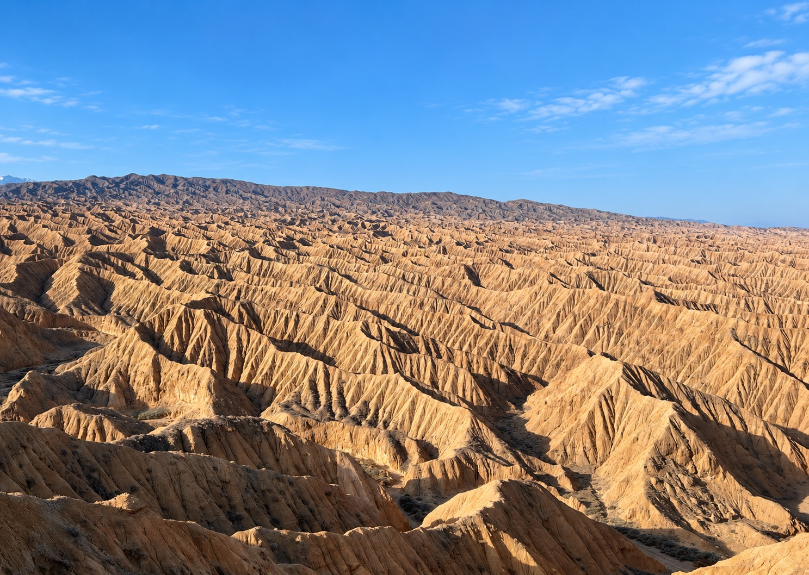
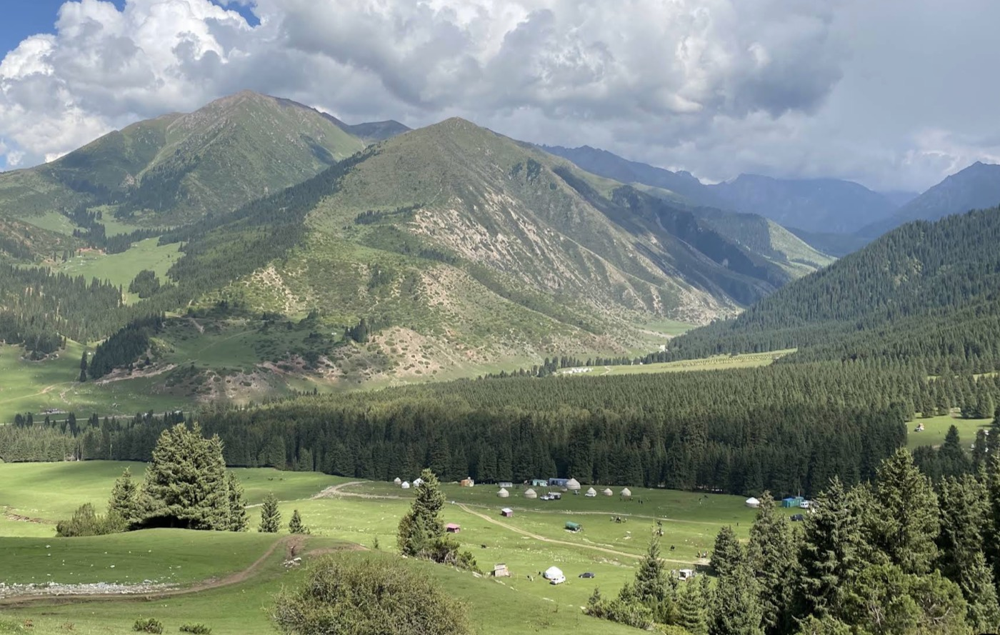
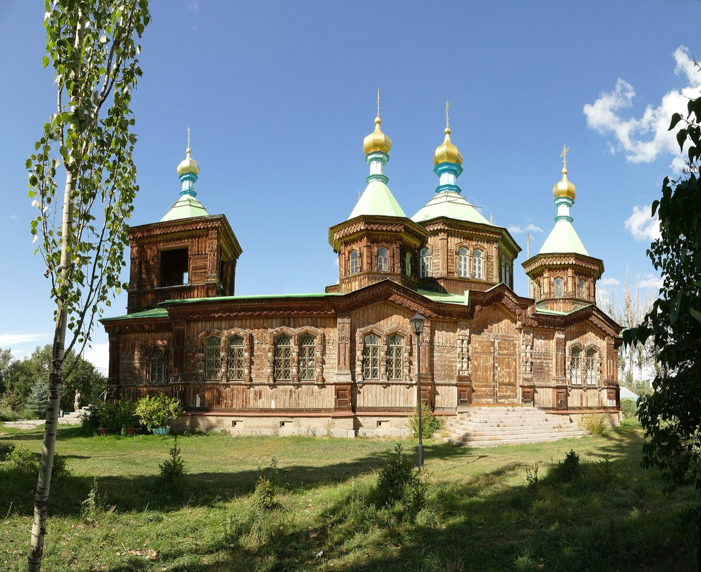

Two nights at Song-Kul
A yurt camp at 3,016 m, a day with a nomad family, and skies full of stars.
Alpine lakes, hidden canyons, hot springs and nomad families: a two-week loop through the heart of the Tien Shan.
This journey connects Kyrgyzstan's three great lakes in one loop: two days with nomad families at Song-Kul, an off-road expedition into the border highlands to hidden Kel-Suu Lake, and the canyons, waterfalls and shores of Issyk-Kul.
Along the way you'll walk among the red rocks of Kok-Moinok, Skazka and Jeti-Oguz, meet a golden eagle hunter, soak in the hot springs of Aksu and Altyn-Arashan, and stay with families in village homestays. The trip ends in Chon-Kemin and with a farewell dinner in Bishkek.
A yurt camp at 3,016 m, a day with a nomad family, and skies full of stars.

An off-road journey into the border highlands, then by horse or on foot to the lake.

Aksay, Skazka and Jeti-Oguz: red rocks, waterfalls and the shores of a vast mountain lake.

Two nights in an alpine valley under snowy peaks, with hiking, riding and natural hot springs.

Shyrdak felt-making, a golden eagle hunter, and homestays with village families.

A last night in a quiet green valley, with horse riding or a forest walk before the drive back to Bishkek.
Two weeks in the mountains is a real journey: some long driving days, off-road tracks, simple yurt camps and nights at 3,000 m. Knowing what to expect makes it much more enjoyable.
Every traveler should read this personally, together with the full day-by-day itinerary.
Yurt camps at Song-Kul and Issyk-Kul. Wooden camp in Kok-Kiya. Mountain guesthouse or yurt at Altyn-Arashan. Family homestays in Kochkor, Tash-Bashat and Chon-Kemin, a 4-star hotel in Naryn, and a guesthouse in Karakol.
Kok-Kiya Valley and Kel-Suu Lake (Days 5–6) are in a border zone. A permit is required, so we'll need your passport details in advance. Keep your passport with you on those days.
The roads to Kok-Kiya (Days 5–7) and Altyn-Arashan (Days 11 and 13) are rough off-road tracks, driven by 4WD or Soviet UAZ. Bumpy, but part of the adventure.
Most days have 1–4 hours of driving, but four days are longer: Day 5 (4–5 h), Day 7 (5–6 h), Day 8 (4–5 h) and Day 13 (5.5–6.5 h), always with stops along the way.
You spend two nights at Song-Kul, 3,016 m, and travel through high passes. Nights in the mountains are cold. Please tell us about any health conditions before booking.
Hikes are 1.5–3 hours. Horse riding is offered at Song-Kul, on the way to Kel-Suu, in Altyn-Arashan and in Chon-Kemin; on most days you can choose to walk instead.
You'll soak at Aksu and Altyn-Arashan, so bring a swimsuit and a small towel.
Day 14 ends with a farewell dinner in Bishkek and an evening transfer to Manas Airport. Please book a night flight, or tell us if you'd like to stay longer.

Bishkek → Burana Tower → Kok-Moinok Canyon → Kochkor
The journey starts with a drive east to Burana Tower, an 11th-century minaret surrounded by ancient stone figures called balbals. After lunch in Tokmok, you continue to Kok-Moinok, a landscape of colorful canyons, for a hike and photos among the rock formations. In the late afternoon you reach Kochkor, where local women show you how shyrdak, the traditional Kyrgyz felt carpets, are made. Dinner and the night are at a family homestay.
Kochkor → Song-Kul Lake
After breakfast and a stop at the supermarket for supplies, the road climbs into the mountains, with stops for photos along the way. You arrive at Song-Kul, a vast alpine lake surrounded by summer pastures, in time for lunch at the yurt camp or a picnic. The afternoon is free to explore the lake, with an optional horse ride along the shore. Watch the sunset from the yurts before a traditional Kyrgyz dinner.

Song-Kul Lake
A whole day at the lake. In the morning you meet a nomad family, learn about their traditional life and share tea together. After lunch at the camp, the afternoon is yours for hiking, horse riding or exploring the lakeshore, with free time for photos.

Song-Kul → 33 Parrots Pass → Waterfall → Naryn
Leaving Song-Kul, you stop at a viewpoint above the famous 33 Parrots hairpin turns before driving down the mountain road. On the way, there's a short walk to the Song-Kul waterfall. Lunch is in Naryn, followed by a walk through town to the Blue Mosque and a visit to the local market. The rest of the afternoon is for resting at your hotel before dinner.

Naryn → Bosogo gorge → Kyndy Pass → Kok-Kiya Valley
The morning starts with a visit to Naryn's local bazaar, where you help choose fresh bread, fruit, and vegetables for today's picnic. Then the road heads south into some of the most remote country in Kyrgyzstan. In Bosogo gorge, you stretch your legs on a 1.5-hour hike into the mountains, followed by a picnic lunch in the gorge. In the afternoon, the drive continues over Kyndy Pass, where passports and border permits are checked, and into the wide, quiet Kok-Kiya Valley. You arrive at a small mountain camp, your base for the next two nights, with time to settle in and warm up in a traditional Kyrgyz banya before dinner.
Good to know
Kok-Kiya is in a border zone. Keep your passport with you, not in your main luggage.
Kok-Kiya Valley → Kel-Suu Lake → Kok-Kiya Valley
An early start for one of Kyrgyzstan's most hidden places. After a drive to the trailhead, you continue on horseback or on foot through the canyon to Kel-Suu Lake. Lunch is a picnic by the water, and afterward there's time to explore the lake, with the option of a boat trip. In the late afternoon you return to the wooden camp in Kok-Kiya for dinner and a quiet evening under the stars.

Kok-Kiya Valley → Naryn → Tash-Bashat
Before breakfast, you can try milking a cow with the camp family. Then you drive back out of the border zone to Naryn for lunch, and on to the village of Tash-Bashat. In the afternoon you take a walk through the village to see local life, with time to relax at your homestay before dinner.
Good to know
Cow milking is arranged with the family a day in advance; let your guide know if you'd like to join.
Tash-Bashat → Aksay Canyon → Issyk-Kul Lake
A morning drive takes you toward Aksay Canyon. After lunch, you hike through the canyon with plenty of time for photos. In the afternoon you reach the shore of Issyk-Kul, one of the largest mountain lakes in the world, to relax by the water and watch the sunset. Dinner is at your yurt camp.

Aksay → Skazka Canyon → Barskoon → Kok-Jaiyk Valley
The day begins with a golden eagle hunter, who shows how his eagle hunts in a traditional demonstration. Then you drive to Skazka, the “Fairy Tale Canyon,” to hike among its red and orange rocks. After lunch in Barskoon, you head into Barskoon Valley for a hike to the waterfall. In the evening you continue to the quiet Kok-Jaiyk Valley for dinner and the night.
Good to know
Outside vehicles aren't allowed into Kok-Jaiyk Valley, so the last part of the transfer, including your luggage, is arranged with the camp.

Kok-Jaiyk Valley → Jeti-Oguz → Karakol
After breakfast at camp, you can hike to Maiden's Braid Waterfall or simply walk around the valley. Lunch is at a yurt camp, before a short drive to Jeti-Oguz to see the red Seven Bulls rocks and Broken Heart Mountain. In Karakol, you visit the Dungan Mosque and the wooden Holy Trinity Cathedral, then have dinner at Dastorkon restaurant.

Karakol → Aksu → Altyn-Arashan Valley
The morning starts with a soak at the Aksu hot spring and a snack. Then you climb into the mountains by 4WD or Soviet UAZ on a rough 16 km track to Altyn-Arashan, an alpine valley surrounded by snowy peaks. After lunch at the mountain guesthouse, you explore the valley, with free time for photos before dinner.
Good to know
The off-road track is very bumpy. Bring a swimsuit and towel for the hot springs.
Altyn-Arashan Valley
A slow day in the mountains. In the morning, you hike or ride a horse through the Altyn-Arashan Valley. After lunch, explore the forests and mountain views, then relax in the valley's natural hot spring. The rest of the afternoon is free before dinner at the guesthouse.

Altyn-Arashan → Karakol → Cholpon-Ata → Chon-Kemin Valley
After breakfast, the 4WD takes you back down to Karakol for lunch at a fish restaurant. The road then follows the northern shore of Issyk-Kul to Cholpon-Ata, where you go out on the lake by boat. In the evening, you drive through the mountains to the Chon-Kemin Valley for dinner at your homestay.
Good to know
This is the longest driving day of the trip, with a late arrival in Chon-Kemin.
Chon-Kemin → Bishkek → Manas Airport
On your last morning, go horse riding or take a forest walk in Chon-Kemin. After lunch, you drive back to Bishkek for a farewell dinner, a warm way to end the journey. In the evening, you're transferred to Manas Airport for your flight home.
On the trip, you may taste these classic dishes:

Hand-cut noodles with boiled meat. The most iconic Kyrgyz dish, served for celebrations and to honor guests.

Fried lamb or beef with potatoes and onions: everyday nomad home cooking.

Rice slow-cooked with carrots and meat, rich and fragrant.

Hand-pulled noodles with vegetables and beef, a favorite across Central Asia.

Meat pastries baked in a traditional clay oven, crisp outside and juicy inside.

Skewers grilled over charcoal in the open air: the smell you'll meet most often on the road.
Have questions about the route, dates or the border permit? Write to us and we'll help you plan your two weeks in Kyrgyzstan.